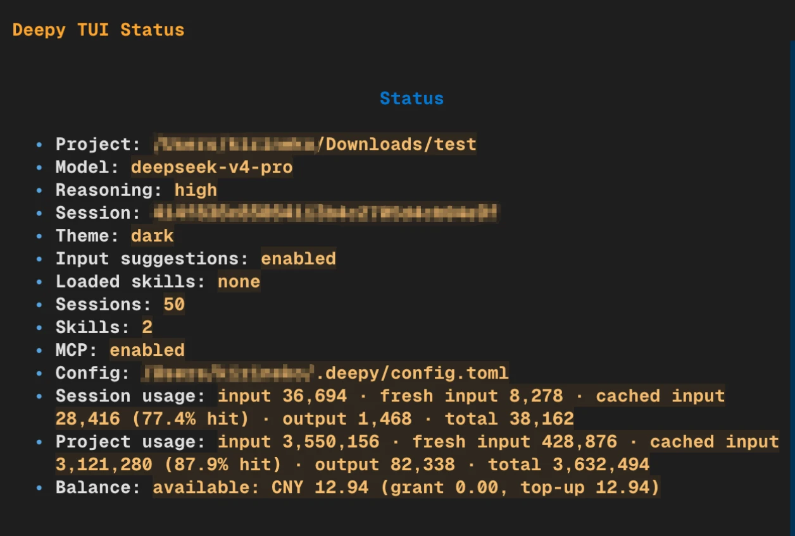
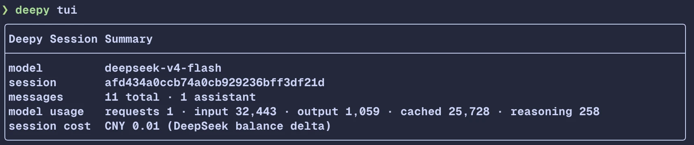
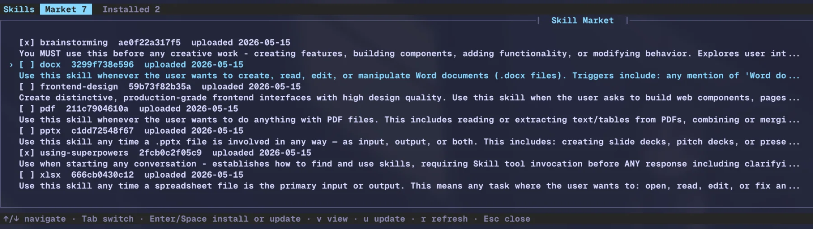
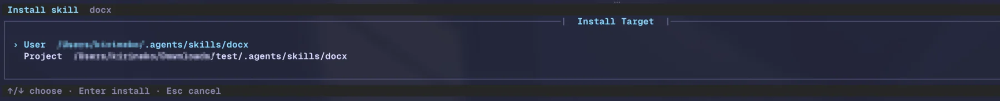
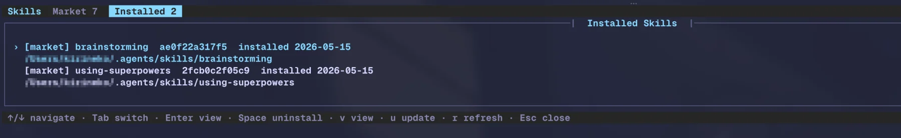
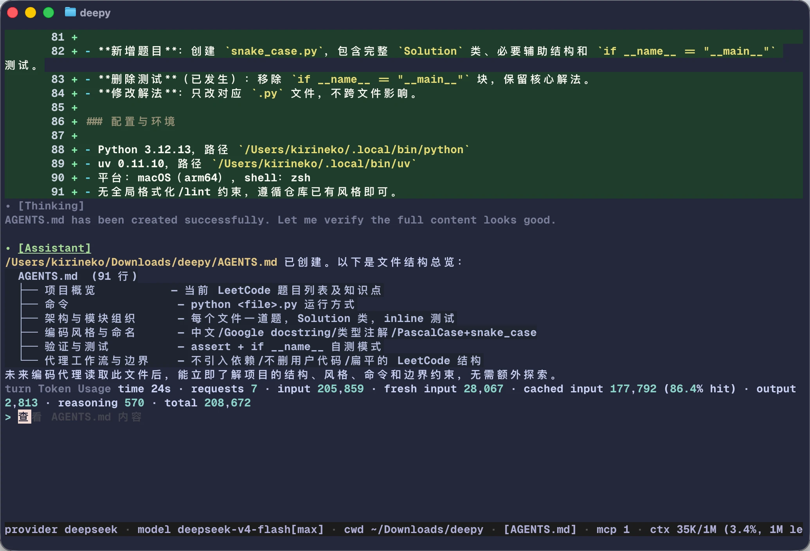
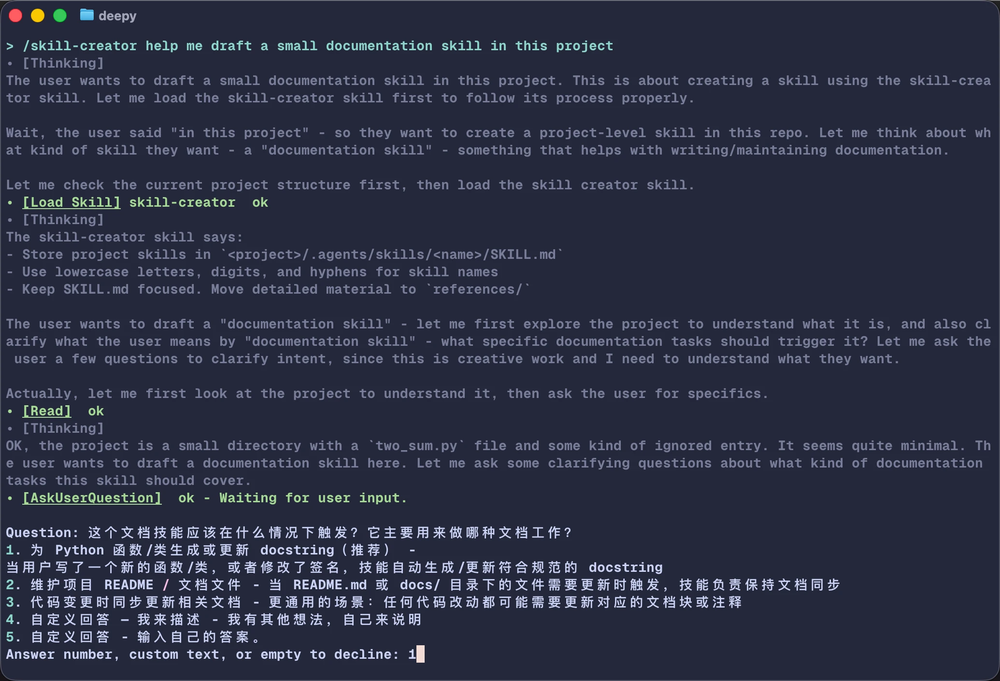
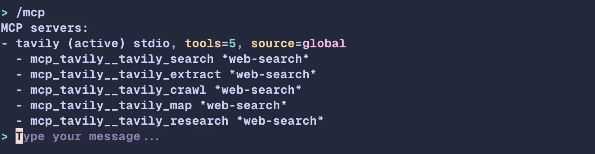
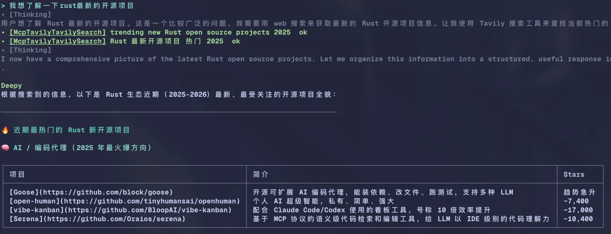

结构化 `apply_patch`
模型通过 create、update、delete、move、replace、insert 等 operations 表达复杂文件修改，不再依赖手写 diff DSL。
Deepy 0.2.12
为 DeepSeek 设计的终端编程 Agent。0.2.12 将 apply_patch 升级为结构化文件操作协议， 让多文件编辑更稳定，diff 展示更完整，并按文件分别提供语法高亮。
Deepy 继续保留 Skills、MCP、项目规则和可审查文件修改能力，同时把复杂文件编辑从 patch 字符串 DSL 升级为结构化 operations，降低模型调用失败率。
模型通过 create、update、delete、move、replace、insert 等 operations 表达复杂文件修改，不再依赖手写 diff DSL。
`apply_patch` 会完整展示所有文件的 diff，不再压缩大 patch；每个文件独立渲染，语法高亮更准确。
模型侧保留 read、edit、write、patch 四类入口，底层统一经过路径策略、编码保留、快照检查和原子写入。
`deepy tui` 提供可滚动 transcript、独立 prompt 区、状态条、slash command 和文件引用提示。
`/skills` 管理 Agent Skills 市场，`/mcp` 检查外部工具接入；Tavily 等 MCP 搜索工具可被优先使用。
JSONL session、`/resume`、自动 compact 和 durable summary 让长项目会话可以恢复和审查。
TUI 仍是 opt-in 实验入口，但 0.2.12 已覆盖主要日常路径：对话、状态检查、退出总结和文件 diff 审阅。 `/status` 会在同一个面板里显示用量、上下文窗口和 DeepSeek 余额。


Deepy 把“下载、解压、放到正确目录、查看已安装”这些步骤收进 `/skills` 菜单。 用户可以先浏览市场，再选择安装到用户目录或当前项目。



0.2.0 的重点不是堆更多命令，而是让模型在终端里按正确的上下文工作：项目规则先加载， skill 按需披露，当前信息查询优先走用户配置的 MCP 工具。

当当前项目存在规则文件时，状态栏会显示 `[AGENTS.md]`，提醒用户模型正受项目规则约束。

输入 `/skill:` 后出现候选提示，用户不用记住已安装 skill 的完整名称。

MCP server、连接状态、工具数量和被标记为 web-search 的工具都可以直接检查。

模型进行当前信息查询时会优先调用 Tavily MCP；若 MCP 不可用，内置 WebSearch 仍可兜底。

文件工具显示整行 diff、按文件分段的语法高亮和路径信息，用户能快速确认 Agent 的文件改动。

用户清楚自己要执行什么时，可直接把命令交给当前 shell，输出仍进入上下文。
Skills、MCP、session history、compact、theme 和跨平台 shell 都服务于同一个目标： 让真实项目里的 Agent 会话可继续、可审查、可恢复。
第一次使用时只需要完成安装、配置 DeepSeek API key，然后在项目目录启动 Deepy。
交互式设置 API key、模型和 UI 主题。
deepy config setupDeepy 会以当前目录作为项目根目录，读取本地规则、skills 和 session。
cd your-project
deepy命令都在终端输入框中使用。
/skills 管理和安装 Agent Skills
/skill:docx 主动调用某个 skill
/mcp 查看 MCP server 状态
/status 查看用量、上下文和 DeepSeek 余额
/init 创建或更新 AGENTS.md
/model 选择模型和 thinking 强度
/resume 恢复历史会话
@src/app.py 引用项目文件
!pytest -q 本地执行非交互命令推荐通过 `uv tool` 安装。Deepy 的 Python 包名是 `deepy-cli`，安装后的命令是 `deepy`。MCP 和 Skills 都可以在安装后按需配置。
# macOS / Linux
curl -LsSf https://astral.sh/uv/install.sh | sh
# Windows PowerShell
powershell -ExecutionPolicy ByPass -c `
"irm https://astral.sh/uv/install.ps1 | iex"Linux / macOS: `~/.config/uv/uv.toml`，Windows: `%AppData%\uv\uv.toml`。
[[index]]
url = "https://mirrors.tuna.tsinghua.edu.cn/pypi/web/simple/"
default = trueuv tool install deepy-clideepy config setup
cd your-project
deepy{
"mcpServers": {
"tavily": {
"transport": "stdio",
"command": "npx",
"args": ["-y", "tavily-mcp"],
"env": {"TAVILY_API_KEY": "${TAVILY_API_KEY}"},
"roles": ["web_search"]
}
}
}